Research Profile
I am an immunology researcher who graduated with a master's degree in tumour immunology in July 2026, with a background in computational biology and experimental cancer research. My expertise includes single-cell and spatial transcriptomics, multi-omics analysis, and the functional investigation of tumour stromal cells.
My master's work focused on the functional heterogeneity and plasticity of cancer-associated fibroblasts (CAFs). I developed a gene-plasticity-based method to characterise CAF subtypes, and functionally validated SUSD2-positive CAFs in pancreatic cancer, showing that Susd2 deletion suppresses tumour growth, reduces collagen deposition, and promotes CD8+ T-cell and MHC-II+ macrophage infiltration.
I am particularly interested in how fibroblast states organise local immune responses in solid tumours. The proposed DPhil on inducing tertiary lymphoid structures (TLS) in metastatic colorectal cancer closely matches my background in CAF heterogeneity, stromal remodelling, immune infiltration and computational analysis of single-cell and spatial data. I hope to investigate how fibroblast programmes and local tissue context shape TLS formation, maturation and anti-tumour function, while developing further expertise in in vivo immunology and spatial tissue analysis.
Research Experience
Master’s Research · Peking University
Investigated gene-plasticity patterns across cancer-associated fibroblasts (CAFs), then functionally validated SUSD2-positive CAFs in pancreatic cancer. This work established a plasticity-based framework for identifying CAF subtypes and evaluating their functional roles.
Collaborative Multi-omics Research
Contributed to projects involving single-cell transcriptomics, spatial analysis, proteomics and inflammatory-disease multi-omics, including an adenoid cystic carcinoma single-cell atlas and osteosarcoma exosome proteomics.
Research Assistant · Shanghai Jiao Tong University
Investigated Foxp3+ regulatory T cells in tissue repair, building a systematic foundation in basic immunology techniques.
Undergraduate Research · Naval Medical University
Received training in bioinformatics and tumour immunotherapy, publishing first-author and co-first-author reviews in Chinese and SCI journals.
Fit with the DPhil Project: Inducing TLS in Metastatic Colorectal Cancer
My background connects directly with the project's central questions: how fibroblast states shape immune organisation, how stromal remodelling affects lymphocyte access, and how single-cell and spatial analyses can reveal mechanisms that may be tested experimentally.
1 · Fibroblast biology
Master’s research on CAF heterogeneity, gene plasticity, SUSD2-positive CAFs and tumour-associated stromal remodelling.
2 · Single-cell & spatial analysis
Analysis of cellular states, tissue organisation, neighbourhood patterns and ligand–receptor signalling in complex datasets.
3 · Experimental immunology
Experience with mouse tumour models, flow cytometry/FACS, genetic perturbation and tissue-level validation.
From CAF heterogeneity to TLS-supporting fibroblasts
My master's project developed a gene-plasticity-based approach to characterise CAF heterogeneity and investigated SUSD2-positive CAFs in pancreatic cancer. This provides a relevant foundation for studying specialised fibroblast states and their potential roles in organising local immune responses. I would be keen to learn how inflammatory FAP-positive fibroblasts respond to LTβR signalling in the context of TLS induction.
Defining TLS organisation with single-cell and spatial data
I use Scanpy/Seurat and Squidpy for single-cell and spatial transcriptomic analysis, including cell-state annotation, neighbourhood enrichment, spatial co-occurrence and spatially variable gene analysis. These approaches could help characterise fibroblast, lymphocyte, dendritic-cell and vascular-cell states across different levels of TLS organisation.
Connecting stromal signals to immune function
My analyses include CellChat, NicheNet, CellPhoneDB and SecAct to prioritise candidate cell–cell communication pathways. In this project, I would be interested in examining LTβR-associated programmes alongside chemokine and stromal networks potentially involved in lymphocyte recruitment, HEV features and TLS maturation, then distinguishing computational hypotheses from experimentally supported mechanisms.
Experimental grounding
I have experience with mouse tumour models, conditional gene perturbation, flow cytometry/FACS, immunofluorescence, histology and tissue processing. I have also contributed to organoid work in a collaborative setting. I would bring this foundation to training in orthotopic colorectal tumour organoid models, longitudinal tumour monitoring, high-parameter immune phenotyping and multiplex tissue imaging.
Why this project
I want to move from describing stromal heterogeneity towards understanding how stromal cells organise functional anti-tumour immunity. TLS induction offers a clear setting in which to integrate fibroblast biology, immune-cell localisation and function, and spatially resolved molecular mechanisms in a clinically important metastatic cancer.
Honors & Awards
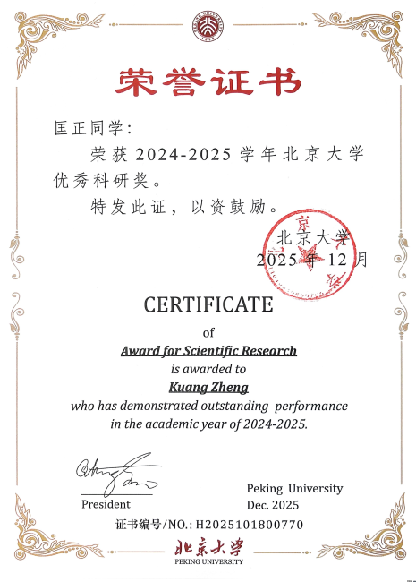
Award of Scientific Research
Peking University

Award of Academic Excellence
Peking University
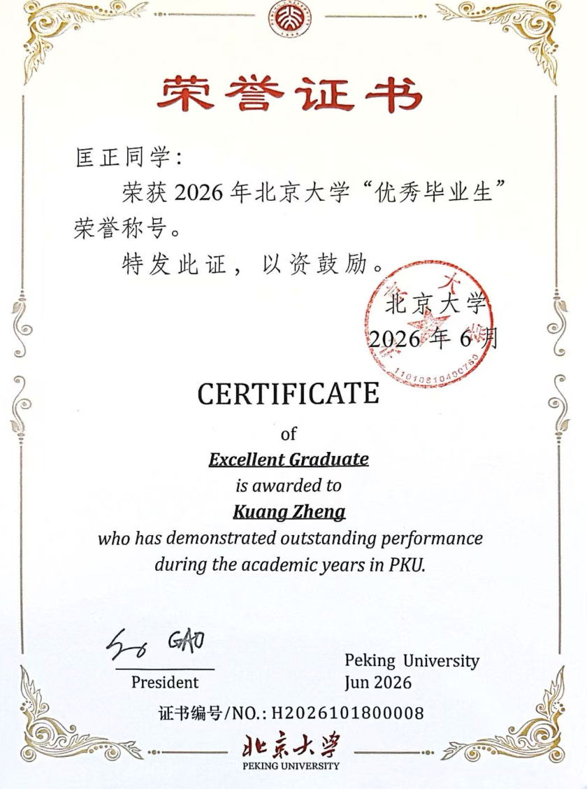
Excellent Graduate
Peking University
Selected Computational Results

Pan-cancer expression analysis
Cross-tumour differential expression to characterise candidate gene regulation and tumour-associated patterns.
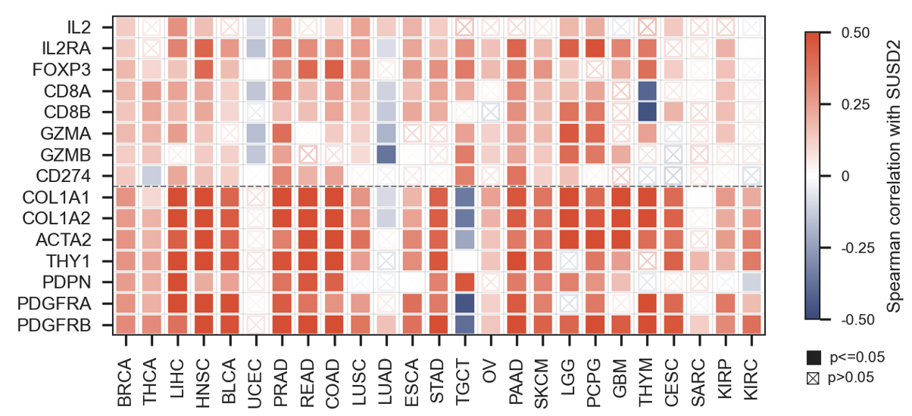
Immune–stromal associations
Correlation analysis linking stromal-associated genes with immune features to generate mechanistic hypotheses.
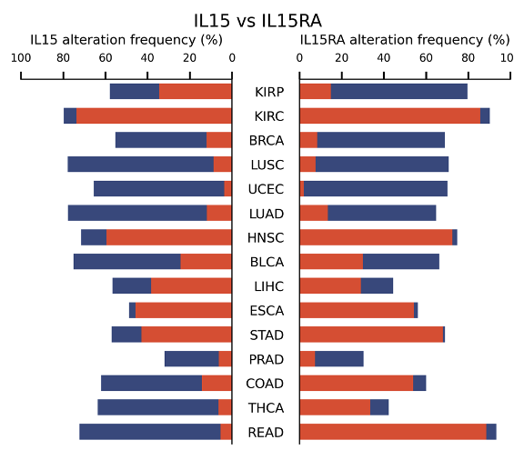
TCGA expression differences
Expression comparison of candidate genes across tumour and normal tissue.

Pan-cancer expression correlation
Cross-tumour gene–gene co-expression relationships.

Survival analysis
Association between candidate gene expression and patient survival.

Pancreatic cancer prognosis
Kaplan–Meier and prognostic validation to assess clinical relevance.
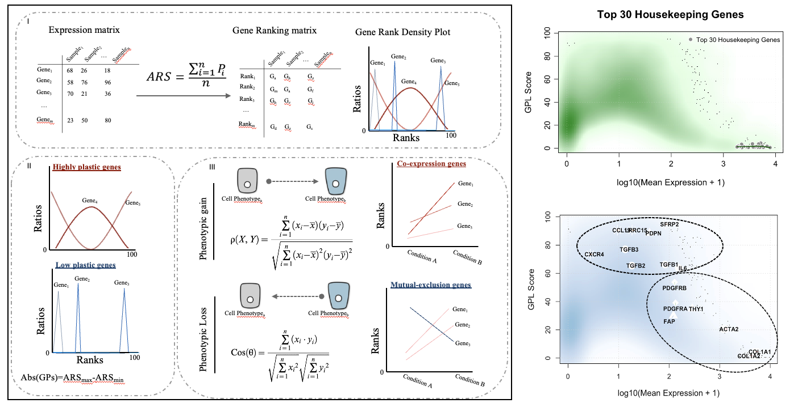
Gene-plasticity algorithm
A plasticity-based framework for rapidly identifying novel CAF subtypes and prioritising candidates such as SUSD2.
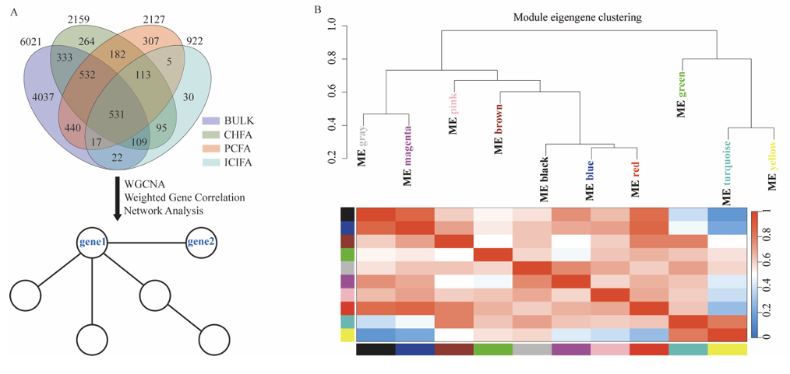
Weighted gene co-expression networks
Network analysis to identify gene modules associated with clinical or biological traits.
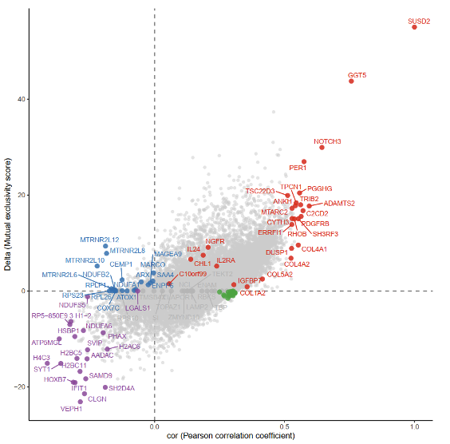
Co-expression / mutual exclusivity
Screen for genes showing co-expression or mutually exclusive expression patterns.

Multi-omics analysis
Integration of multiple omics layers to resolve gene relationships.

GO / KEGG enrichment
Functional annotation of gene lists via Gene Ontology and KEGG pathways.
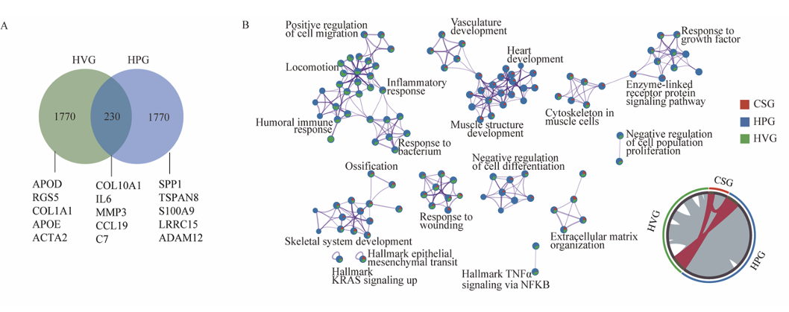
Venn gene comparison
Overlap analysis across gene sets to identify shared and unique candidates.

Hallmark enrichment
Hallmark gene-set enrichment to characterise biological states.

Enrichment analysis
Additional enrichment results supporting the candidate gene story.
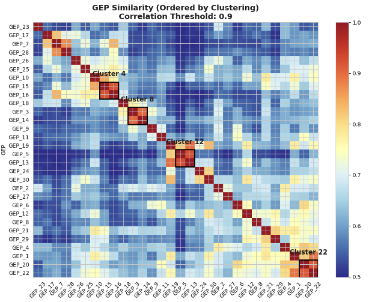
GEP analysis
Gene-expression-program analysis to capture cellular programs in bulk or single-cell data.

Chromatin accessibility
ATAC-seq analysis to relate regulatory elements to candidate genes.
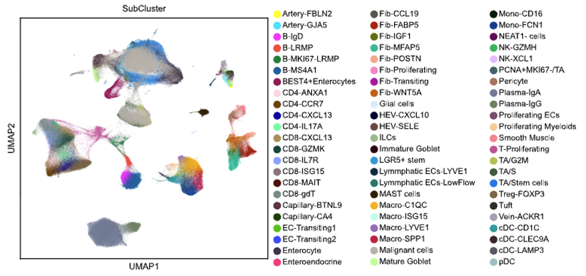
Large-scale public data mining
Integration and mining of large public transcriptomic datasets.
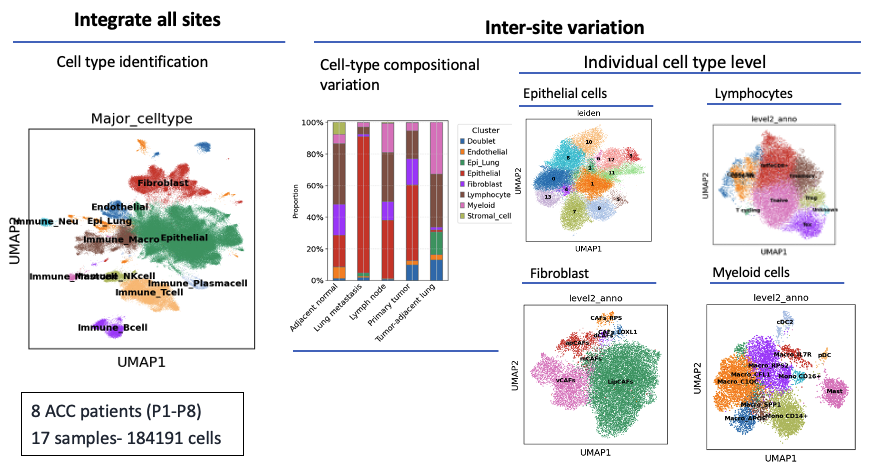
ACC tumour analysis
Overview schematic of an adenoid cystic carcinoma analysis workflow.
Spatial & Single-cell Multi-omics
I have extensive computational experience analysing public spatial transcriptomics and spatial imaging datasets — including MERFISH and CosMx — using Squidpy and Scanpy. My experience focuses on downstream computational analysis rather than operating the experimental platforms themselves.

UMAP clustering
Single-cell clustering and dimensionality reduction.
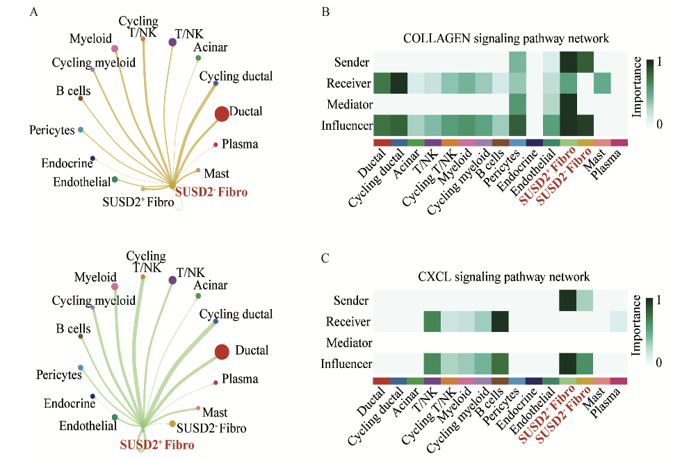
Cell–cell communication (I)
Ligand–receptor interaction analysis to infer intercellular signalling.
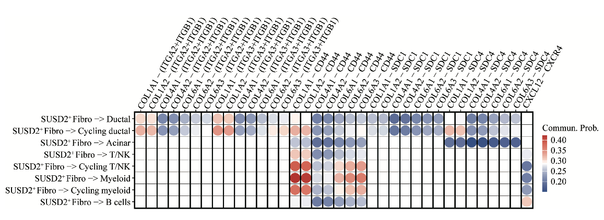
Cell–cell communication (II)
Additional communication analysis across cell states.
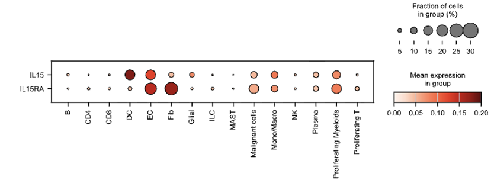
Marker expression dotplot
Dotplot of marker gene expression across clusters.

Pseudotime analysis
Trajectory inference of cell-state transitions.

Spatial expression analysis
Spatial distribution of gene expression in tissue.
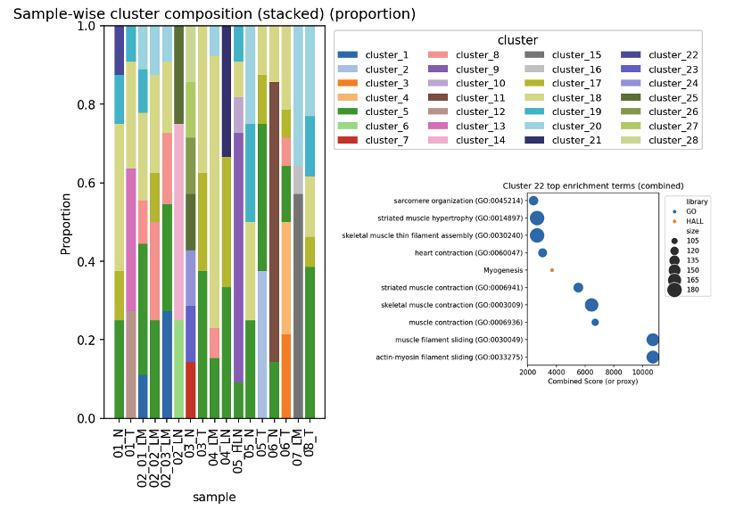
Cell proportion analysis
Deconvolution of cell-type proportions across samples.
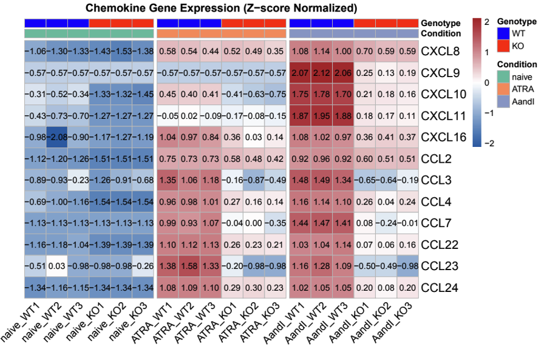
Cytokine expression
Expression profiling of cytokine-related genes.

Cell density analysis
Spatial quantification of single-cell density across the tissue.

Spatial cell annotation
Cell-type annotation mapped onto spatial transcriptomics coordinates.
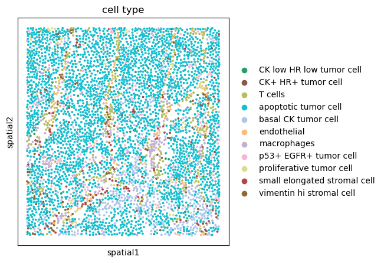
Spatial cell-type mapping
Spatial layout of annotated cell types in imaging mass cytometry data.

Spatial co-occurrence
Quantification of cluster co-occurrence as a function of distance.
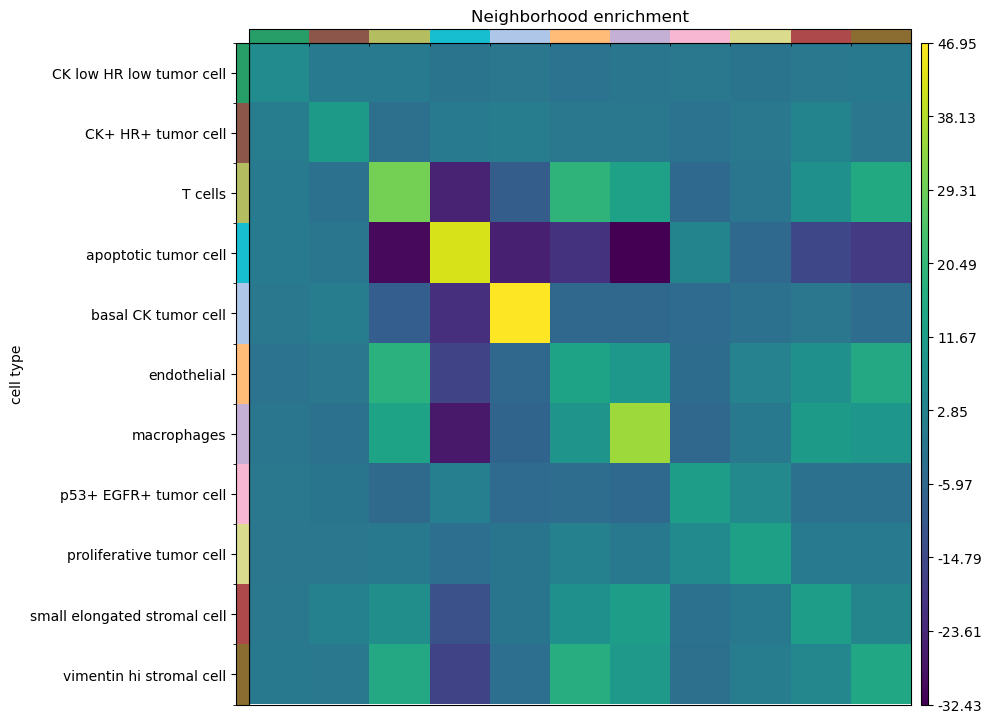
Neighbourhood enrichment
Permutation-based enrichment of spatial cell-type proximity.

seqFISH spatial enrichment
Neighbourhood enrichment across seqFISH cell-type annotations.

Spatially variable genes
Identification of spatially structured genes via Moran's I autocorrelation.

3D spatial reconstruction
Three-dimensional spatial analysis of consecutive MERFISH sections.

Multiplexed proteomics
Spatial segmentation of single-cell metabolic profiles in MIBI-TOF data.
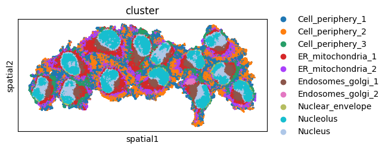
Iterative immunofluorescence
Spatial analysis of 4i imaging data.
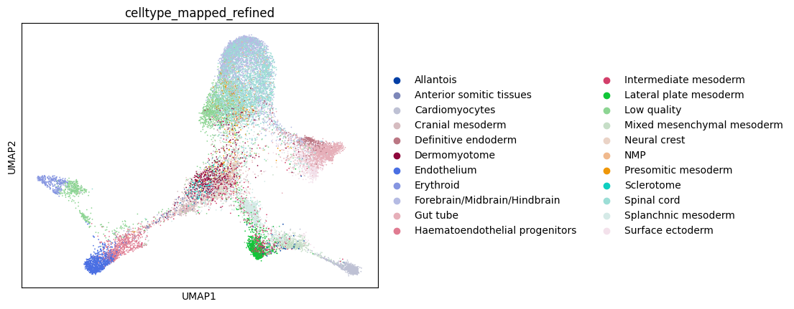
Single-cell UMAP embedding
UMAP projection of seqFISH cells annotated across 22 cell types.

Spatial segmentation
Cell segmentation on Nanostring CosMx-style spatial data.
Selected Experimental Results
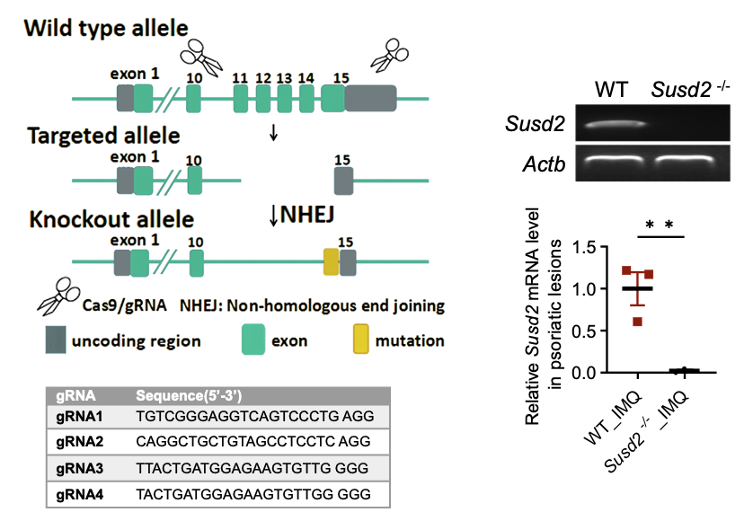
CRISPR/Cas9 Susd2 knockout mouse
Generation of a Susd2 conditional knockout to test CAF function.

Pancreatic cancer mouse model
Orthotopic tumour modelling to assess the effect of Susd2 deletion.
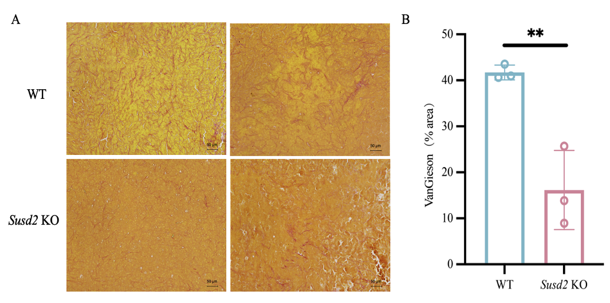
Collagen deposition (VG staining)
Van Gieson staining showing reduced collagen fibre deposition upon Susd2 deletion.
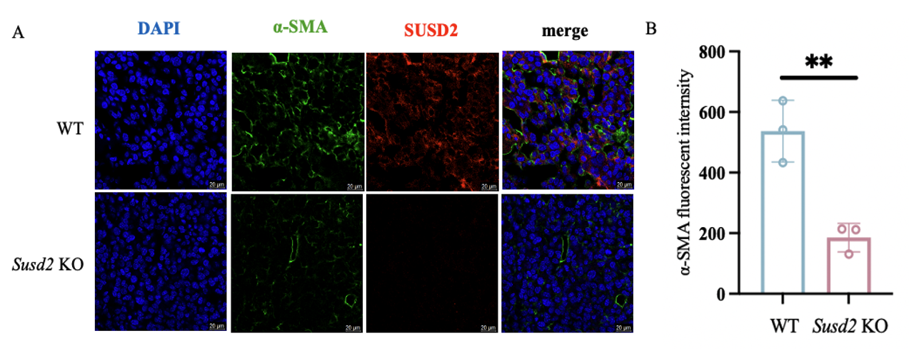
Immunofluorescence
In situ analysis of immune infiltration and stromal markers.
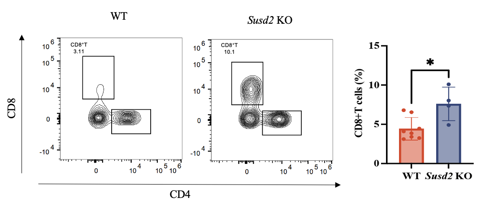
CD8+ T-cell analysis
Quantification of CD8+ T-cell infiltration by flow cytometry.
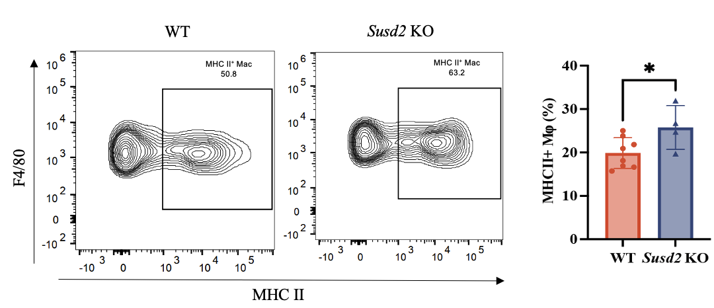
MHC-II+ macrophage analysis
Quantification of MHC-II+ macrophages in the tumour microenvironment.

Gating strategy
Representative gating scheme used to define stromal and immune populations.

Cell sorting
Isolation of CAFs using a PDPN+CD31−EpCAM−CD45− strategy.

Sorted population RNA-seq
Transcriptomics of flow-sorted cell populations.

Fc fusion protein
Design of Fc fusion proteins to block ligand–receptor interactions.

Fc protein purification
Expression and purification of recombinant Fc fusion proteins.
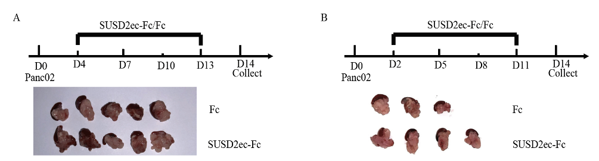
Tumour Fc fusion injection
Administration of engineered proteins in tumour models.
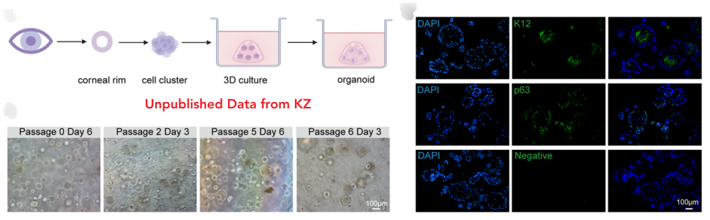
Organoid culture
Human corneal epithelial organoids cultured from corneal rim tissue (collaboration, under review).
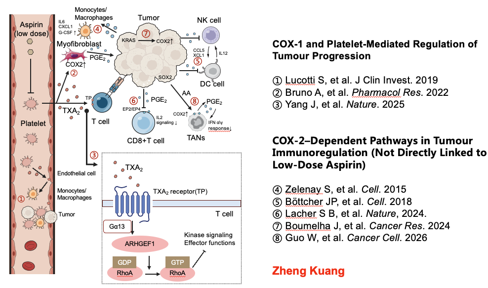
Literature summary figure
Summary figure prepared with Adobe Illustrator and Photoshop to synthesise the literature.
Technical Skills
Computational
- R, Python, Linux/Bash and high-performance computing
- Single-cell (Scanpy/Seurat) and bulk RNA-seq analysis
- Computational analysis of spatial data (Squidpy/Scanpy: Visium, Slide-seqV2, seqFISH, MERFISH, CosMx, MIBI-TOF, 4i, Nanostring)
- Cell–cell communication (CellChat, NicheNet, CellPhoneDB / Squidpy ligrec, SecAct)
- Multi-omics integration (transcriptomics, ATAC-seq, proteomics, metabolomics)
- AlphaFold3-based protein–interaction screening
Experimental
- Flow cytometry and fluorescence-activated cell sorting
- CRISPR/Cas9 design and gene perturbation
- Orthotopic and subcutaneous mouse tumour models
- Recombinant Fc fusion protein design and purification
- Immunofluorescence, immunohistochemistry, Western blotting
Scientific communication
- Scientific figure preparation with Adobe Illustrator and Photoshop
- Literature summary and graphical abstract design
Contact
For research enquiries or potential collaborations, please contact me by email.